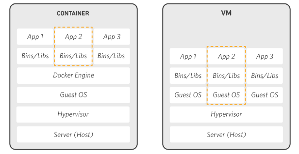

Docker – это программная платформа для быстрой разработки, тестирования и развертывания приложений. Docker упаковывает ПО в стандартизованные блоки, которые называются контейнерами. Каждый контейнер включает все необходимое для работы приложения: библиотеки, системные инструменты, код и среду исполнения. Благодаря Docker можно быстро развертывать и масштабировать приложения в любой среде и сохранять уверенность в том, что код будет работать. Использование Docker на AWS предоставляет разработчикам и системным администраторам надежный и экономичный способ сборки, доставки и запуска распределенных приложений любого масштаба.

Как работает Docker
| В основе работы Docker лежит стандартизированный способ исполнения кода. Docker – это операционная система для контейнеров. Подобно тому как виртуальная машина создает виртуальное представление аппаратного обеспечения сервера (то есть устраняет необходимость непосредственно управлять таковым), контейнеры создают виртуальное представление серверной операционной системы. После установки на каждый сервер Docker предоставляет доступ к простым командам, необходимым для сборки, запуска или остановки контейнеров. |  | |
| Такие сервисы AWS, как AWS Fargate, Amazon ECS, Amazon EKS и AWS Batch, упрощают работу с контейнерами Docker, а также управление ими в любом масштабе. |  |
Когда рекомендуется использовать Docker
Контейнеры Docker можно использовать в качестве основных компонентов для создания современных платформ и приложений. Docker упрощает сборку и запуск распределенных микросервисных архитектур, развертывание кода с помощью стандартизированных конвейеров непрерывной интеграции и доставки, создание высокомасштабируемых систем обработки данных и полностью управляемых платформ для разработчиков. Сотрудничество AWS и Docker позволит упростить операцию развертывания артефактов Docker Compose в Amazon ECS и AWS Fargate.
| МИКРОСЕРВИСЫ | ОБРАБОТКА ДАННЫХ | НЕПРЕРЫВНАЯ ИНТЕГРАЦИЯ И ДОСТАВКА | КОНТЕЙНЕР КАК СЕРВИС | |
|---|---|---|---|---|
| Воспользуйтесь преимуществами стандартизированного развертывания кода с помощью контейнеров Docker для создания и масштабирования распределенных архитектур приложений. | Обработки больших данных как сервис. Объедините пакеты данных и аналитики в портативные контейнеры, запуск которых не требует специальных технических навыков. | Ускорьте доставку приложений за счет стандартизации рабочих сред и устранения расхождений между стеками и версиями языков программирования. | Создавайте и доставляйте распределенные приложения, содержание и инфраструктура которых программно управляема и защищена. |